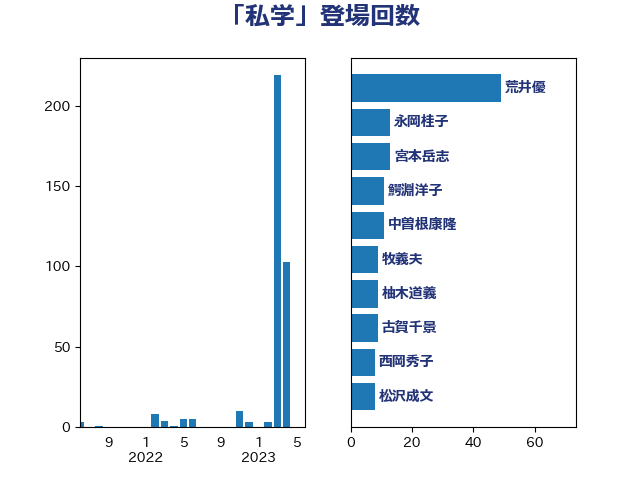

単語「私学」

| 荒井優 | 立憲民主党 | 49 回 |
| 永岡桂子 | 自由民主党 | 13 回 |
| 宮本岳志 | 日本共産党 | 13 回 |
| 鰐淵洋子 | 公明党 | 11 回 |
| 中曽根康隆 | 自由民主党 | 11 回 |
| 牧義夫 | 立憲民主党 | 9 回 |
| 柚木道義 | 立憲民主党 | 9 回 |
| 古賀千景 | 立憲民主党 | 9 回 |
| 西岡秀子 | 国民民主党 | 8 回 |
| 松沢成文 | 日本維新の会 | 8 回 |
| 早坂敦 | 日本維新の会 | 8 回 |
| 宮内秀樹 | 自由民主党 | 8 回 |
| 臼井正一 | 自由民主党 | 7 回 |
| 伊藤孝恵 | 国民民主党 | 7 回 |
| 末松信介 | 自由民主党 | 6 回 |
| 吉良よし子 | 日本共産党 | 6 回 |
| 吉川元 | 立憲民主党 | 6 回 |
| 金村龍那 | 日本維新の会 | 5 回 |
| 竹内真二 | 公明党 | 5 回 |
| 高橋はるみ | 自由民主党 | 4 回 |
| 道下大樹 | 立憲民主党 | 4 回 |
| 舩後靖彦 | れいわ新選組 | 4 回 |
| 大島九州男 | れいわ新選組 | 4 回 |
| 古川直季 | 自由民主党 | 4 回 |
| 宮口治子 | 立憲民主党 | 3 回 |
| 堀場幸子 | 日本維新の会 | 3 回 |
| 音喜多駿 | 日本維新の会 | 2 回 |
| 義家弘介 | 自由民主党 | 2 回 |
| 簗和生 | 自由民主党 | 2 回 |
| 河西宏一 | 公明党 | 2 回 |
| 森山浩行 | 立憲民主党 | 2 回 |
| 岸田文雄 | 自由民主党 | 2 回 |
| 高木かおり | 日本維新の会 | 1 回 |
| 青山周平 | 自由民主党 | 1 回 |
| 階猛 | 立憲民主党 | 1 回 |
| 鈴木英敬 | 自由民主党 | 1 回 |
| 西村康稔 | 自由民主党 | 1 回 |
| 笠浩史 | 無所属 | 1 回 |
| 福山哲郎 | 立憲民主党 | 1 回 |
| 池田佳隆 | 自由民主党 | 1 回 |
| 梅谷守 | 立憲民主党 | 1 回 |
| 本村伸子 | 日本共産党 | 1 回 |
| 小野泰輔 | 日本維新の会 | 1 回 |
| 大石あきこ | れいわ新選組 | 1 回 |
| 下村博文 | 自由民主党 | 1 回 |
| 上田清司 | 国民民主党 | 1 回 |